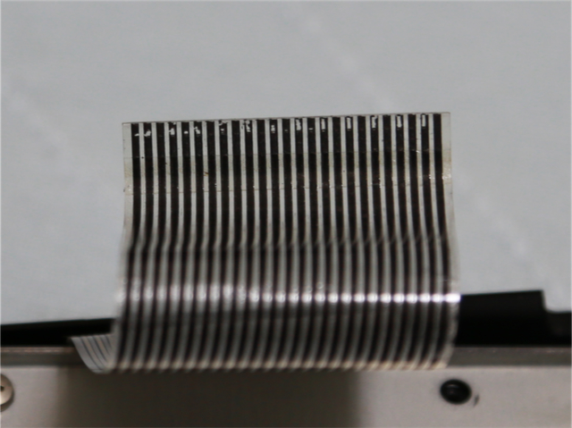
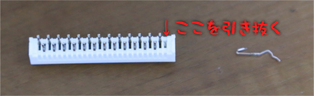
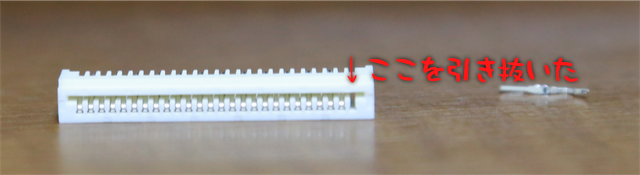
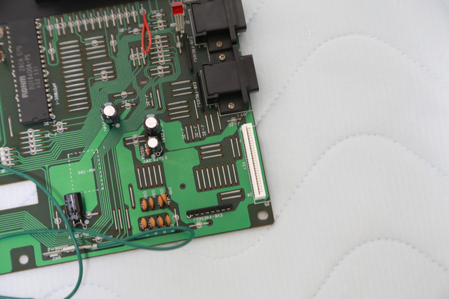

CASIO MX-101 キーボード修復 (2020年9月14日現在)
ちゃんとラッチを外したにもかかわらず、フィルムケーブルの導電体が削れてしまったのです。

カット前に削れた導電体がコネクタのバネの方に張り付いてヤスリのような状態になっていたのかもしれません。
いずれにしても、ちょっとカットして対応するのではダメで、根本的に改善しないと、気楽に分解できないことが明らかになりました。
ということで、ここからが大がかりな修復作業の始まりでございます。
まず、マザーボード側のコネクタを除去します。
無洗浄タイプのフラックスを塗って、半田シュッ太郎NEOで吸い取りました。
シュッ太郎の先を当てた瞬間に半田が溶け出すので、手早く吸い取って、マザーボードを焦がさないように注意してください。
RSコンポーネンツに下記の部品を手配。
■コネクタ
JST FPC/FFC コネクタ, 26極, 1.25mm, スルーホール (型番 26FE-BT-VK-N)
■FFCケーブル
Molex FFCジャンパケーブル 152mm ,ピッチ1.25mm PREMO-FLEX FFC JUMPER シリーズ (型番98268-0331)
キーボードコネクタは 25極ですが、25極のコネクタは売り切れ・FFCケーブルは無さそうでした。
なので、26極のコネクタから 1本抜き取って 25極に。26極の FFCケーブルを利用して端っこ1極未使用でいくことにしました。
FFCケーブルは、両端の端子が同じ方を向いているタイプです。
下記が、コネクタから1本抜き取った状態です。この位置を抜き取ると、ちょうど FFCケーブルの端子が外側に向く形でマザーボードに取り付けられます。


これを、マザーボードに取り付けます。

[前へ][次へ]